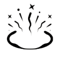
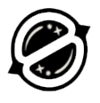

| VIPER | |||
| Q - NUVEM VENENOSA | E - CORTINA TÓXICA | C - VENENO DE COBRA | X - POÇO PEÇONHENTO |
| EQUIPE um emissor de gás. DISPARE para jogar o emissor, que persiste até o fim da rodada. REPITA para criar uma nuvem de gás tóxico que drena combustível. A habilidade pode ser REPETIDA mais de uma vez e pode ser recolhida para ser REPOSICIONADA. | EQUIPE um lançador de emissores de gás. DISPARE para lançar uma longa linha de emissores de gás. REPITA a habilidade para criar uma parede alta de gás tóxico que drena combustível. A habilidade pode ser REPETIDA mais de uma vez. | EQUIPE um lançador químico. DISPARE para lançar um cilindro que se rompe ao atingir o chão, gerando uma zona química duradoura que causa dano e reduz a velocidade dos inimigos. | EQUIPE um borrifador químico. DISPARE para borrifar uma nuvem química em todas as direções ao redor de Viper, criando uma grande nuvem que reduz o alcance de visão e a Vida máxima dos jogadores dentro dela. |
| ASTRA | |||
|  |  | ||
| Q - PULSO NOVA | E - NEBULOSA | C - POÇO GRAVITACIONAL | X - FORMA ASTRAL / DIVISA CÓSMICA |
| Posicione Estrelas na Forma Astral (X) ATIVE uma Estrela para detonar um Pulso Nova. O Pulso Nova carrega brevemente e depois estoura, causando concussão a todos os jogadores na área. | Posicione Estrelas na Forma Astral (X) ATIVE uma Estrela para transformá-la em uma Nebulosa (fumaça). Utilize (F) em uma Estrela para dissipá-la, retornando a estrela para ser posicionada em um novo local após um período de tempo. Dissipar forma brevemente uma Nebulosa falsa na localização da Estrela antes de retornar." | Posicione Estrelas na Forma Astral (X) ATIVE uma Estrela para formar um Poço Gravitacional. Jogadores na área são puxados em direção ao centro antes de ele explodir, deixando frágeis todos que ainda estão presos no centro. | ATIVE (X) para entrar na Forma Astral, em que você pode posicionar Estrelas com DISPARO ALTERNATIVO. As Estrelas podem ser reativadas depois para serem transformadas em Pulso Nova, Nebulosa ou Poço Gravitacional. Quando Divisa Cósmica estiver carregada, utilize o DISPARO SECUNDÁRIO na Forma Astral para começar a mirar e, depois, o DISPARO PRIMÁRIO para escolher dois locais. Após isso, uma Divisa Cósmica infinita surge e conecta os pontos selecionados. A Divisa Cósmica bloqueia disparos e abafa muito o som. |
| BRIMSTONE | |||
 |
|||
| Q - INCENDIÁRIO | E - FUMAÇA CELESTE | C - SINALIZADOR ESTIMULANTE | X - ATAQUE ORBITAL |
| EQUIPE um lançador de granadas incendiárias. DISPARE para lançar uma granada que detona no chão, gerando uma zona de fogo que causa dano aos jogadores dentro dela. | EQUIPE um mapa tático. DISPARE para marcar locais onde as nuvens de fumaça de Brimstone pousarão. Use o DISPARO ALTERNATIVO para confirmar, lançando nuvens de fumaça de longa duração que bloqueiam a visão na área selecionada. | EQUIPE um sinalizador estimulante. DISPARE para jogar o sinalizador diante de Brimstone. Ao pousar, o sinalizador criará um campo que concede Tiro Rápido aos jogadores | EQUIPE um mapa tático. DISPARE para lançar um ataque prolongado de laser orbital no local selecionado, causando muito dano ao longo do tempo aos jogadores na área selecionada. |
| OMEN | |||
| Q - PARANOIA | E - MANTO SOMBRIO | C - PASSOS TENEBROSOS | X - SALTO DAS SOMBRAS |
| INSTANTANEAMENTE emite um projétil sombrio adiante, reduzindo brevemente o alcance de visão dos jogadores tocados. O projétil atravessa paredes. | EQUIPE um orbe sombrio e veja o indicador de alcance. DISPARE para lançar o orbe no local marcado, criando uma esfera de sombra duradoura que bloqueia a visão. SEGURE O DISPARO ALTERNATIVO enquanto mira para afastar o marcador. SEGURE a tecla de habilidade enquanto mira para aproximar o marcador. | EQUIPE uma habilidade de passos sombrios e olhe o indicador de alcance. DISPARE para começar uma breve canalização e, então, teleporte-se para o local marcado. | EQUIPE um mapa tático. DISPARE para começar a se teleportar ao local selecionado. Enquanto se teleporta, Omen aparecerá como um Vulto que pode ser destruído por qualquer inimigo para cancelar o teleporte. |
| HARBOR | |||
| Q - ENSEADA | E - MARÉ ALTA | C - CASCATA | X - ACERTO DE CONTAS |
| EQUIPE uma esfera de água defensiva. DISPARE para jogá-la. Use o DISPARO ALTERNATIVO para lançar por baixo. Ao atingir o solo, a esfera invoca um escudo de água destrutível que bloqueia balas. | EQUIPE uma parede de água. DISPARE para enviar a água para frente junto ao chão. SEGURE O DISPARO para guiar a água na direção da sua retícula, atravessando o mundo e fazendo surgir uma parede ao longo do caminho. Use o DISPARO ALTERNATIVO enquanto curva para parar a água mais cedo. Jogadores atingidos sofrem REDUÇÃO DE VELOCIDADE. | EQUIPE uma onda de água. DISPARE para enviar a onda para frente e através de paredes. REPITA para impedir a onda de seguir em frente. Jogadores atingidos sofrem REDUÇÃO DE VELOCIDADE. | EQUIPE o poder total do seu Artefato. DISPARE para invocar um gêiser no solo. Os inimigos na área são repetidamente alvejados por ataques do gêiser. Jogadores capturados dentro de uma área de ataque sofrem CONCUSSÃO. |